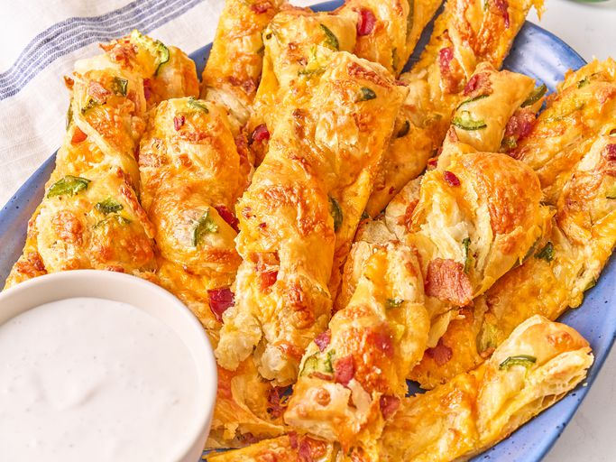

Jalapeno Popper Twists

Description
These jalapeno popper twists are made from puff pastry sheets filled with bacon, cream cheese, Cheddar, and jalapenos, sliced into strips, twisted, and baked. This appetizer is a delicious 'twist' on your favorite poppers.
Ingredients
- 1 pound bacon
- 2 sheets frozen puff pastry, thawed according to package directions
- 1/2 (8 ounce) package cream cheese, softened
- 8 ounces Cheddar cheese, shredded
- 2 jalapenos - seeded, quartered, and sliced, or more to taste
- 1 large egg, beaten
Steps
- Preheat the oven to 400 degrees F (200 degrees C). Line a rimmed baking sheet with parchment.
- Place bacon in a large skillet and cook over medium-high heat, turning occasionally, until evenly browned, about 10 minutes. Drain bacon slices on paper towels. Chop bacon when cool enough to handle.
- Lightly flour a work surface, and roll out each pastry sheet until folds are smoothed out.
- Place one pastry puff sheet on the prepared baking sheet. Spread cream cheese in a thin layer over pastry; sprinkle with 2/3 shredded Cheddar, half the bacon and half the jalapenos.
- Place second sheet of pastry on top, aligning the edges. Using a sharp knife or pizza cutter, cut the assembled pastry in half lengthwise, then cut into 1.5-inch strips crosswise.
- Brush pastry with beaten egg using a pastry brush. Twist each strip; touch up each twist with more egg wash as needed. Space twists out on the baking sheet; sprinkle with remaining Cheddar cheese, bacon, and jalapenos.
- Bake in the preheated oven until puffed and golden brown, 12 to 15 minutes.
Home